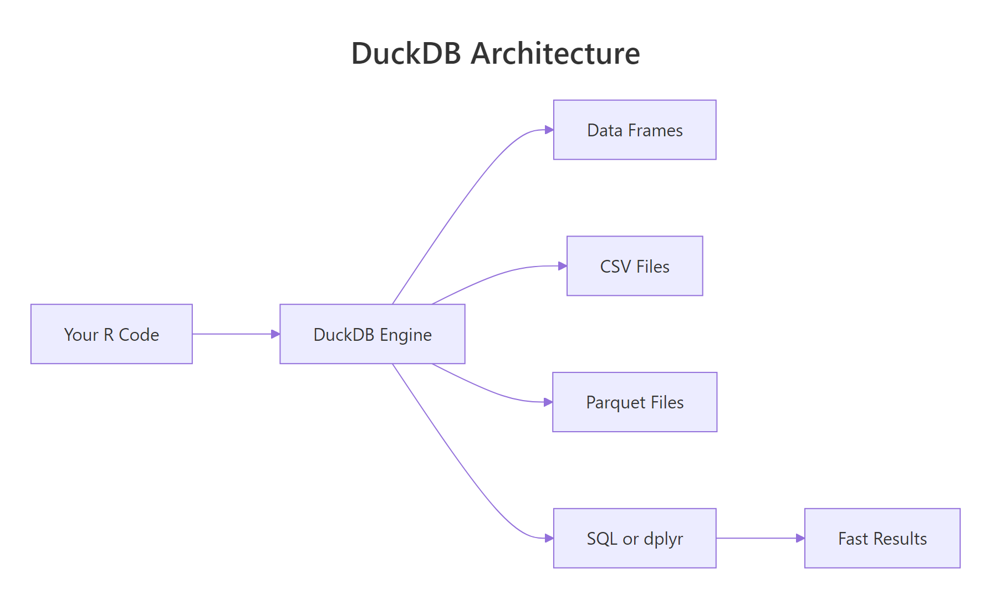
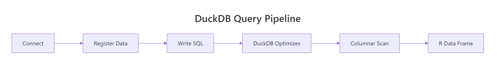
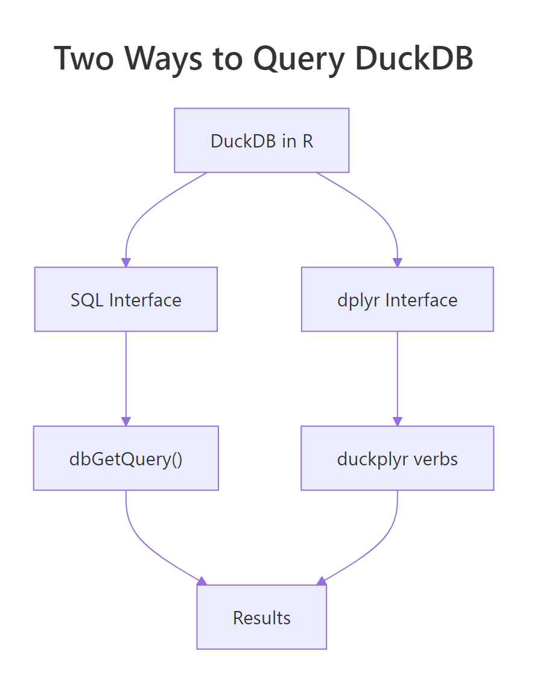

DuckDB in R: Query 100 Million Rows on Your Laptop in Under 2 Seconds
DuckDB is an in-process analytical database that runs inside your R session — no server, no setup. It queries CSVs, Parquet files, and R data frames directly with SQL or dplyr syntax, and it does so fast enough to handle datasets that crash most tools.
Why is DuckDB faster than reading a CSV?
Reading a CSV into R with read.csv loads every column and every row into memory as R vectors. For a 10-million-row file, that can take minutes and gigabytes of RAM. DuckDB does something fundamentally different: it opens the file, reads only the columns and rows your query needs, and never builds a full in-memory copy. The payoff is a 10x-100x speedup on realistic analytical queries — and you can query files larger than your RAM.
Same API as any DBI database, but the engine behind it is a columnar, vectorised, multi-threaded query planner that was purpose-built for analytical queries. If you know SQL, everything you already write just runs faster.

Figure 1: DuckDB runs inside the R process — no client-server round trips. Data lives in columnar format for vectorised queries.
ggplot2. There is nothing to install separately, nothing to configure, nothing to start. It just works.Try it: Connect to DuckDB and run a trivial query.
Click to reveal solution
This is the smallest possible DuckDB session — connect, run a single SELECT that needs no tables, disconnect. If this works, your installation is good.
How do you install DuckDB and run your first query?
Installation is one line:
Because DuckDB is C++ compiled into the R package, there is no separate binary to install, no environment variable, no driver to configure. The duckdb R package contains the entire database engine.
By default this gives you an in-memory database that vanishes when you disconnect. For persistent storage, pass a file path:
From there, everything you already know from DBI works. Let's walk through a minimal workflow:
Three steps: connect, write, query. The column names from iris have dots in them, so SQL needs them in double quotes. Everything else is standard SQL.
shutdown = TRUE to dbDisconnect() for DuckDB. Without it, the in-process database keeps the file handle open, which can block subsequent connections. It is a harmless extra argument for SQLite-style databases but essential here.Try it: Open an in-memory DuckDB, write mtcars, and query for the five cars with the highest mpg.
Click to reveal solution
ORDER BY mpg DESC LIMIT 5 sorts the table descending and keeps only the top five rows — the standard SQL "top-N" pattern.
How do you query CSV and Parquet files without loading them?
This is where DuckDB really shines. You can point it at a file on disk and it queries the file directly — no read.csv, no temporary table, no RAM spike.
Read "SELECT ... FROM 'file.csv'" as "treat this file as if it were a table in the database". DuckDB's CSV reader is battle-tested — it auto-detects separators, quotes, and types. For Parquet, the advantage is even bigger because the format is columnar on disk: if your query touches 3 out of 50 columns, DuckDB reads only those 3 from the file.

Figure 2: DuckDB's query pipeline. Projection (selecting columns) happens before the data is materialised, so wide files stay cheap to query.
For multiple files that share a schema — say, one CSV per day — use a glob pattern:
The query planner treats the union of all matching files as one logical table. This is how DuckDB handles multi-file datasets without any manual concatenation.
WHERE year = 2025 is pushed into the Parquet reader, which skips entire row groups that can't match. On a 100-million-row file, you may scan only 5 million rows.Try it: Write mtcars to a CSV and then query it directly from DuckDB without loading it first.
Click to reveal solution
DuckDB treats 'mtcars_tmp.csv' as if it were a table name. The CSV reader auto-detects the schema and only reads the columns the query needs — no read.csv step required.
How does DuckDB compare to SQLite and data.table?
All three are fast, but they target different problems.
| Feature | SQLite | DuckDB | data.table |
|---|---|---|---|
| In-process | Yes | Yes | Yes |
| Query language | SQL | SQL + dplyr | [i, j, by] |
| Storage format | Row-based | Columnar | In-memory only |
| Multi-threaded | No | Yes | Yes |
| Query larger than RAM | Limited | Yes | No |
| Direct CSV/Parquet query | No | Yes | No |
SQLite is optimized for transactional workloads — small, frequent reads and writes on a single row at a time. It is the right choice for configuration files, offline apps, and small datasets. It is not optimised for "aggregate over 10 million rows".
data.table is the fastest in-memory table library in R. It is perfect for datasets that fit in RAM and when you want R syntax, not SQL. But it cannot query Parquet files and does not stream larger-than-RAM data.
DuckDB fills the sweet spot between the two: analytical speed on datasets that might or might not fit in memory, with a query language (SQL) that is widely understood and already known by anyone with a data warehouse background.
duckdb_register() is a clever trick: DuckDB reads directly from your R data frame's memory, so there is zero copy, zero serialization, and zero additional RAM usage. For quick joins between a big Parquet file and a small R reference table, it is the ideal pattern.
Try it: Register iris as a DuckDB view using duckdb_register() and run a GROUP BY query on it.
Click to reveal solution
duckdb_register() exposes the R data frame as a virtual table without copying it. From DuckDB's point of view it looks just like any other table you can query, group, and join.
How do you use DuckDB with dplyr via dbplyr or duckplyr?
Two options. The older path is dbplyr via DBI — exactly like any other database. The newer path is duckplyr, a drop-in replacement for dplyr that is powered by DuckDB under the hood.

Figure 3: Two ways to talk to DuckDB from R. Pick the one that matches your team's background.
Same dplyr you write every day. The collect() at the end runs the generated SQL and brings the result back as a tibble. show_query() lets you see the SQL if you want to learn or debug.
The newer duckplyr package goes one step further: you do not even see the DBI calls.
Syntactically identical to dplyr. Behind the scenes, duckplyr turns each verb into DuckDB execution, so the whole pipeline runs at the native speed of the engine — often 5-50x faster than plain dplyr for group-and-aggregate workloads.
Try it: Use dbplyr to filter and summarize a DuckDB-registered iris.
Click to reveal solution
The dplyr verbs are translated to SQL by dbplyr and executed inside DuckDB. setosa drops out because all of its petals are shorter than 4 cm, so the group has no rows after the filter.
When should you persist a DuckDB file vs use in-memory?
In-memory mode (dbConnect(duckdb()) with no path) is perfect when:
- You are querying a CSV or Parquet file directly — the DuckDB "database" is just a scratch space for the query planner.
- Your workflow is stateless — every script run starts fresh.
- You want maximum speed — no disk I/O for intermediate state.
Persistent mode (dbConnect(duckdb(), dbdir = "file.duckdb")) is the right choice when:
- You are building a derived dataset that will be re-used across scripts or sessions.
- You have intermediate tables from ETL jobs that are expensive to re-compute.
- Multiple processes need to share the same tables (though only one can write at a time).
The CREATE OR REPLACE TABLE ... AS SELECT pattern (CTAS) materializes the result of a query into a named table. For ETL and reporting workflows, this is the bread-and-butter idiom.
.duckdb file on disk — easy to back up, version, or share. Unlike PostgreSQL, there is no cluster directory or permissions to worry about.Try it: Create a persistent DuckDB file, write a table, disconnect, reconnect, and verify the table is still there.
Click to reveal solution
Because the first connection wrote to a file (dbdir = "tmp.duckdb") instead of memory, the table survives the disconnect. Reconnecting to the same file path gives a new session that sees all previously stored tables.
How do you handle larger-than-memory data with DuckDB?
DuckDB's secret weapon is that it can spill to disk when a query's intermediate state exceeds RAM. Joins, sorts, and large GROUP BY operations all spill automatically. You do not have to configure anything.
The aggregate is computed in streaming fashion — DuckDB reads the Parquet file one row group at a time, maintains a partial hash table per customer, and spills to a temporary file when memory pressure gets high. You get a 100-row result from a 50-GB input.
Three tips for very large data:
- Use Parquet, not CSV. Parquet is compressed and columnar — often 10x smaller on disk and much faster to query.
- Filter early. Put
WHEREclauses on columns that exist in the file, so DuckDB can skip entire row groups via predicate pushdown. - Limit memory with
memory_limitif needed.dbExecute(con, "SET memory_limit = '4GB'")caps DuckDB to 4 GB and forces aggressive spilling.
SET threads = 4 tells DuckDB to use 4 parallel threads — on a laptop with 8 cores, 4 is often a good balance between query speed and leaving cores for the rest of your workflow.
Try it: Use SET memory_limit to cap DuckDB at 2 GB and SET threads to 2.
Click to reveal solution
SET memory_limit and SET threads are session-level pragmas — they apply to the current connection. The [1] 0 from dbExecute() is the affected-row count (zero, because no data rows changed).
Practice Exercises
Exercise 1: Register and query
Register the mtcars data frame with DuckDB, then compute the average mpg per cyl using SQL.
Solution
Exercise 2: Query a CSV directly
Write iris to a CSV file and query it with DuckDB without loading it into R first.
Solution
Exercise 3: CTAS and reuse
Create a persistent DuckDB file with a materialised table of average petal length per species, then reconnect and read it.
Solution
Complete Example
End-to-end analytics workflow: load data, query with both SQL and dplyr, materialise the result.
Two interfaces, one engine, identical results. Use SQL when you are collaborating with data engineers, dplyr when you are deep in a tidyverse pipeline. The runtime is the same because DuckDB does the work in both cases.
Summary
| Task | Function / SQL |
|---|---|
| Connect in-memory | dbConnect(duckdb()) |
| Connect persistent | dbConnect(duckdb(), dbdir = "file.duckdb") |
| Zero-copy register df | duckdb_register(con, "name", df) |
| Query CSV directly | SELECT * FROM 'file.csv' |
| Query Parquet directly | SELECT * FROM 'file.parquet' |
| Multi-file glob | SELECT * FROM 'data/2025-*.parquet' |
| Materialise a result | CREATE OR REPLACE TABLE x AS SELECT ... |
| Cap memory | SET memory_limit = '4GB' |
| Set thread count | SET threads = 4 |
| Always disconnect with | dbDisconnect(con, shutdown = TRUE) |
Four rules:
- Use DuckDB for analytics, SQLite for transactions. Different tools for different jobs.
- Register, don't copy.
duckdb_register()makes a data frame queryable with zero overhead. - Query files directly. Skip the
read.csv/read_parquetstep entirely. - Always
shutdown = TRUE. It prevents dangling file handles on disconnect.
References
- DuckDB project site
- DuckDB R package
- duckplyr package site
- DuckDB SQL reference
- Mark Raasveldt and Hannes Mühleisen, Duckdb: An Embeddable Analytical Database, SIGMOD 2019
Continue Learning
- DBI in R — the interface DuckDB uses; learn DBI once, use it with any database.
- dplyr group_by() and summarise() — translate directly to DuckDB via dbplyr.
- Importing Data in R — DuckDB complements the traditional
read_csv/read_parquetworkflow.